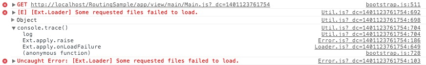

Ext JS provides support for both MVC and MVVM application architectures. Both of these architectural approaches share certain concepts and focus on dividing application code along logical lines. Each approach has its strengths based on how it chooses to divide up the pieces of an application.
The goal of this guide is to provide you with foundational knowledge regarding the components that make up these architectures.
What is MVC?
In an MVC architecture, most classes are either Models, Views or Controllers. The user interacts with Views, which display data held in Models. Those interactions are monitored by a Controller, which then responds to the interactions by updating the View and Model, as necessary.
The View and the Model are generally unaware of each other because the Controller has the sole responsibility of directing updates. Generally speaking, Controllers will contain most of the application logic within an MVC application. Views ideally have little (if any) business logic. Models are primarily an interface to data and contain business logic to manage changes to said data.
The goal of MVC is to clearly define the responsibilities for each class in the application. Because every class has clearly defined responsibilities, they implicitly become decoupled from the larger environment. This makes the app easier to test and maintain, and its code more reusable.
What is MVVM?
The key difference between MVC and MVVM is that MVVM features an abstraction of a View called the ViewModel. The ViewModel coordinates the changes between a Model’s data and the View’s presentation of that data using a technique called “data binding”.
The result is that the Model and framework perform as much work as possible, minimizing or eliminating application logic that directly manipulates the View.
Returning Users
Ext JS 5 introduces support for the MVVM architecture as well as improvements on the (C) in MVC. While we encourage you to investigate and take advantage of these improvements, it is important to note that we have made every effort to ensure existing Ext JS 4 MVC applications continue to function unmodified.
MVC and MVVM
To understand how these choices fit into your application, we should start by defining what the various abbreviations represent.
(M) Model - This is the data for your application. A set of classes (called “Models”) defines the fields for their data (e.g. a User model with user-name and password fields). Models know how to persist themselves through the data package and can be linked to other models via associations.
Models are normally used in conjunction with Stores to provide data for grids and other components. Models are also an ideal location for any data logic that you may need, such as validation, conversion, etc.
(V) View - A View is any type of component that is visually represented. For instance, grids, trees and panels are all considered Views.
(C) Controller - Controllers are used as a place to maintain the view’s logic that makes your app work. This could entail rendering views, routing, instantiating Models, and any other sort of app logic.
(VM) ViewModel - The ViewModel is a class that manages data specific to the View. It allows interested components to bind to it and be updated whenever this data changes.
These application architectures are provide structure and consistency to your framework code. Following the conventions we suggest will provide a number of important benefits:
Every application works in the same manner, so you only have to learn it once.
It’s easy to share code between applications.
You can use Sencha Cmd to create optimized production versions of your applications.
Building a Sample App
Before we start walking through the pieces, let’s build a sample application with Sencha Cmd. Simply issue the following commands from your command line:
sencha generate app -ext MyApp ./app
cd app
sencha app watchNote: If you are not familiar with what’s happening above, please check out our Getting Started guide.
Application Overview
Before we start talking about the pieces that make up the MVC, MVVM, MVC+VM patterns, let’s take a look at the structure of a Cmd generated application.
File Structure
Ext JS applications follow a unified directory structure that is the same for every app. In our recommended layout, all classes are placed into the app folder. This folder contains sub-folders that namespace your Models, Stores, and View elements. View elements, such as View, ViewControllers, and ViewModels should stay grouped together as best practice for organization (see “main” view folder below).

Namespace
The first line of each Class is an address of sorts. This “address” is called a namespace. The formula for namespace is:
<AppName>.<foldername>.<ClassAndFileName>In your sample app, “MyApp” is the AppName, “view” is the folder name, “main” is the sub-folder name and “Main” is the Class and Filename. Based on that information, the framework looks for a file called Main.js in the following location:
app/view/main/Main.jsIf that file is not found, Ext JS will throw an error until you remedy the situation.

Application
Let’s start evaluating the application by looking at index.html.
<!DOCTYPE HTML>
<html>
<head>
<meta charset="UTF-8">
<title>MyApp</title>
<!-- The line below must be kept intact for Sencha Cmd to build your application -->
<script id="microloader" type="text/javascript" src="bootstrap.js"></script>
</head>
<body></body>
</html>Ext JS uses the Microloader to load application resources described in the app.json file. This replaces the need to add them to index.html. With app.json all of the application meta-data exists in a single location. Sencha Cmd can then compile your application in a simple and efficient manner.
app.json is heavily commented and provides an excellent resource for gleaning information about the information it accepts.
app.js
When we generated our application earlier, we created a class (in Application.js) AND launched an instance of it (in app.js). You can see the content of app.js below:
/*
* This file is generated and updated by Sencha Cmd. You can edit this file as
* needed for your application, but these edits will have to be merged by
* Sencha Cmd when upgrading.
*/
Ext.application({
name: 'MyApp',
extend: 'MyApp.Application',
autoCreateViewport: 'MyApp.view.main.Main'
//-------------------------------------------------------------------------
// Most customizations should be made to MyApp.Application. If you need to
// customize this file, doing so below this section reduces the likelihood
// of merge conflicts when upgrading to new versions of Sencha Cmd.
//-------------------------------------------------------------------------
});autoCreateViewport is a new feature as of Ext JS 5. By designating a container class for autoCreateViewport, you can use any class as your Viewport. In the above example, we have determined MyApp.view.main.Main (a Container class) to be our Viewport.
The autoCreateViewport config instructs the application to create the designated view and attach the Viewport Plugin. This connects the view to the document body.
Application.js
Every Ext JS application starts with an instance of the Application Class. This class is intended to be launch-able by app.js as well as instantiable for testing.
The following Application.js content is automatically created when you generate your application with Sencha Cmd.
Ext.define('MyApp.Application', {
extend: 'Ext.app.Application',
name: 'MyApp',
stores: [
// TODO: add global/shared stores here
],
launch: function () {
// TODO - Launch the application
}
});The Application Class contains global settings for your application, such as the app’s namespace, shared stores, etc.
Views
A View is nothing more than a Component, which is a subclass of Ext.Component. A view contains all of your application’s visual aspects.
If you open the starter app’s Main.js under the “main” folder, you should see the following code.
Ext.define('MyApp.view.main.Main', {
extend: 'Ext.container.Container',
xtype: 'app-main',
controller: 'main',
viewModel: {
type: 'main'
},
layout: {
type: 'border'
},
items: [{
xtype: 'panel',
bind: {
title: '{name}'
},
region: 'west',
html: '<ul>...</ul>',
width: 250,
split: true,
tbar: [{
text: 'Button',
handler: 'onClickButton'
}]
},{
region: 'center',
xtype: 'tabpanel',
items:[{
title: 'Tab 1',
html: '<h2>Content ...</h2>'
}]
}]
});Please note that the view does not include any application logic. All of your view’s logical bits should be included in the ViewController, which we’ll talk about in the next section.
This particular view defines a container with a border layout with a west and center region. These regions include a panel with a toolbar containing a button and a tab panel with a single tab. If you aren’t familiar with these concepts, check out our Getting Started Guide.
Two interesting pieces of this view are the controller and viewModel configs.
Controller Config
The controller config allows you to designate a ViewController for the view. When a ViewController is specified on a view in this manner, it then becomes a container for your event handlers and references. This gives the ViewController a one-to-one relationship with the components and events fired from the view. We’ll talk more about controllers in the next section.
ViewModel Config
The viewModel config allows you to designate a ViewModel for the view. The ViewModel is a data provider for this component and its child views. The data contained in the ViewModel is typically used by adding bind configs to the components that want to present or edit this data.
In the above view, you can see that the title of the west region’s panel is bound to the ViewModel. This means that the title will be populated by data’s “name” value, which is managed in the ViewModel. If the ViewModel’s data changes, the title’s value will be automatically updated. We’ll discuss ViewModels later in this document.
Controllers
Next, let’s take a look at Controllers. The starter app’s generated ViewController MainController.js looks like this:
Ext.define('MyApp.view.main.MainController', {
extend: 'Ext.app.ViewController',
requires: [
'Ext.MessageBox'
],
alias: 'controller.main',
onClickButton: function () {
Ext.Msg.confirm('Confirm', 'Are you sure?', 'onConfirm', this);
},
onConfirm: function (choice) {
if (choice === 'yes') {
//
}
}
});If you look back at your view, Main.js, you’ll notice a function designation for the tbar button’s handler. That handler is mapped to a function called onClickButton in this controller. As you can see, this controller is ready to deal with that event with no special setup.
This makes it incredibly easy to add logic for your application. All you need to do is define the onClickButton function since your controller has a one-to-one relationship with its view.
Upon clicking the view’s button, a Message box will be created. This message box contains its own function call with onConfirm, which is scoped to this same controller.
ViewControllers are designed to:
Make the connection to views using “listeners” and “reference” configs obvious.
Leverage the life cycle of views to automatically manage their associated ViewController. From instantiation to destruction, Ext.app.ViewController is tied to the component that referenced it. A second instance of the same view class would get its own ViewController instance. When these views are destroyed, their associated ViewController instance will be destroyed as well.
Provide encapsulation to make nesting views intuitive.
ViewModels
Next, let’s take a look at the ViewModel. If you open your MainModel.js file, you should see the following code:
Ext.define('MyApp.view.main.MainModel', {
extend: 'Ext.app.ViewModel',
alias: 'viewmodel.main',
data: {
name: 'MyApp'
}
//TODO - add data, formulas and/or methods to support your view
});A ViewModel is a class that manages a data object. This class then allows views interested in this data to bind to it and be notified of changes. The ViewModel, like ViewController, is owned by the view that references it. Because ViewModels are associated with a view, they are also able to link to a parent ViewModel owned by ancestor components in the component hierarchy. This allows child views to simply “inherit” the data of their parent ViewModel.
We created a linkage from our view to the ViewModel with the ViewModel config in Main.js. This linkage allows binding of configs with setters to automatically set data from the viewModel onto the view in a declarative fashion. The data is in-line in the MainModel.js example. That said, your data could be anything and come from anywhere. Data may be provided by any sort of proxy (AJAX, REST, etc).
Models and Stores
Models and Stores make up the information gateway of your application. Most of your data is sent, retrieved, organized, and “modeled” by these two classes.
Models
A Ext.data.Model represents any type of persist-able data in your application. Each model has fields and functions that allow your application to “model” data. Models are most commonly used in conjunction with stores. Stores can then be consumed by data-bound components like grids, trees, and charts.
Our sample application does not currently contain a model so let’s add the following code:
Ext.define('MyApp.model.User', {
extend: 'Ext.data.Model',
fields: [
{name: 'name', type: 'string'},
{name: 'age', type: 'int'}
]
});As mentioned in the namespace section above, you would want to create User.js, which will live under app/model.
Fields
Ext.data.Model describes records that contain values or properties called “fields”. The Model class can declare these fields using the “fields” config. In this case, the “name” is declared to be a string and age is an integer. There are other field types available in the API docs.
While there are good reasons to declare fields and their types, doing so is not required. If you do not include the fields config, data will be automatically read and inserted into the data object. You will want to define your fields if your data needs:
Validation
Default values
Convert functions
Let’s set up a store and see these two work together.
Stores
A Store is a client side cache of records (instances of a Model class). Stores provide functions for sorting, filtering and querying the records contained within.
This sample application does not contain a store, but not to worry. Simply define your store and assign the Model.
Ext.define('MyApp.store.User', {
extend: 'Ext.data.Store',
model: 'MyApp.model.User',
data : [
{firstName: 'Seth', age: '34'},
{firstName: 'Scott', age: '72'},
{firstName: 'Gary', age: '19'},
{firstName: 'Capybara', age: '208'}
]
});Add the above content to User.js, which should be placed in app/store.
You can add the store to Application.js’s store config if you’d like a global instance of your store. The stores config in Application.js would look like this:
stores: [
'User'
],In this example, the store directly contains the data. Most real world situations would require that you gather data by using a proxy on your model or store. Proxies allow for data transfer between your data providers and applications.
You can read more about models, stores, and data providers in our Data Guide.
Next Steps
We’ve created a robust and useful application called the Ticket App. This application manages Login/Logout sessions, incorporates data binding, and displays “best practice” when utilizing an MVC+VM architecture. This example has been heavily commented so that everything is as clear as possible.
We recommend you spend some time exploring the Ticket App to learn more about ideal MVC+VM Application Architecture.